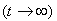
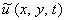
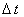

|
Введём для дифференциального уравнения (11.1) двумерную разностную сетку
и запишем разностную схему, используя для аппроксимации каждой из производных второго порядка
разностный оператор (2.12):
Очевидно, что данная разностная схема неразрешима.
Для численного решения дифференциальных
уравнений эллиптического типа (также как и для решения обыкновенных дифференциальных уравнений
второго порядка) используют метод установления, заключающийся в преобразовании стационарной задачи
в нестационарную. С этой целью в уравнение (11.1), описывающее стационарную задачу,
следует добавить фиктивную производную по времени:
При этом искомая функция станет уже функцией трёх переменных:
Полученное уравнение (11.2) относится к двумерным дифференциальным
уравнениям параболического типа, методы численного решения которых мы уже рассматривали.
Если при численном решении уравнения (11.2), описывающего нестационарную
задачу, использовать граничные условия, соответствующие исходной стационарной задаче (11.1), т.е.
граничные условия, не зависящие от времени, то с течением времени  производная по времени будет
стремиться к нулю, а решение  нестационарной задачи (11.2) - к решению стационарной задачи (11.1):
Отметим, что выполнение условия (11.3) обеспечивается независимостью от времени не только
граничных условий, но и свободного члена уравнений (11.1) и (11.2).
Таким образом, для численного решения дифференциальных уравнений
эллиптического типа можно использовать разностные схемы, аппроксимирующие двумерные
дифференциальные уравнения параболического типа. Напомним, что процесс пошагового приближения решения
нестационарной задачи к решению исходной стационарной задачи называют итерационным процессом,
переход от n-го шага к (n + 1)-му - итерацией, а значение  - шагом итерации.
|